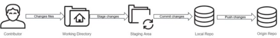
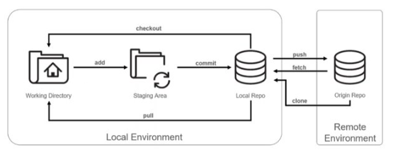
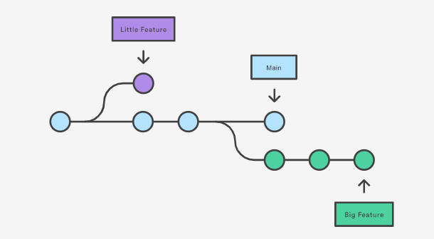
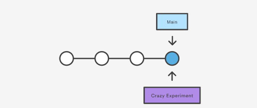
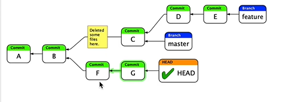
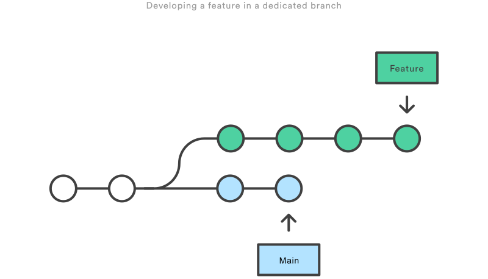
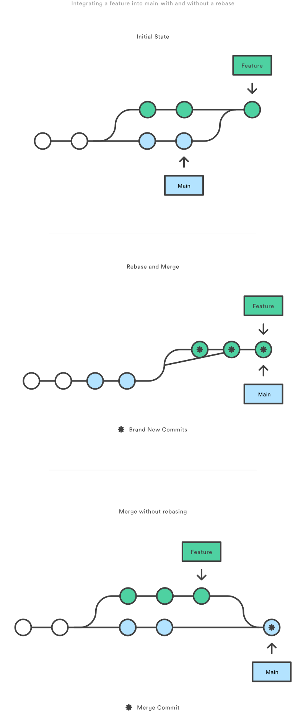

En esta segunda semana del internship, se comenzó en materia con respecto a los temas tecnicos, nuestro primer challenge fue GIT, el cual fue realizar un flujo de trabajo normal de un proyecto con distintas etapas de su ciclo de vida, de igual forma se tuvo el onboarding de la disciplina con nuestro mentor lead para conocer un poco más de la estructura del rol dentro de la empresa, como está jerarquizado, etc.
GIT
Git es un sistema de control de versiones distribuido que nos permite mantener un seguimiento del código realizado con la mayor facilidad posible.
En el año 2005 Linus Torvalds, quien además es el creador de Ubuntu, propuso este sistema para tener un seguimiento de los aportes comunitarios para el kernel de este nuevo sistema operativo
Git nos facilita muchas cosas y la principal es no tener la necesidad de mantener multiples copias de un mismo archivo, sino más bien tener un historial confiable de los cambios realizados para poder así realizar un rollback de ser necesario, finalmente otro de los pilares de GIT es que nos permite trabajar de manera colaborativa con otros desarrolladores y así tener una mejor comunicación con el trabajo.

Para comenzar en git se pueden utilizar distintas herramientas que explotan este marco de trabajo, herramientas como:
- Github
- Gitlab
- BitBucket
- Git Server
Nos permiten crear repositorios remotos donde podremos compartir nuestros desarrollos con el resto del équipo y tener una colaboración constante en el desarrollo de una aplicación.
Por otro lado, debemos descargar GIT en nuestros equipos para poder realizar y subir los cambios a estos servicios. Una vez descargado GIT, configuraciones como username, email, editor de texto, etc, pueden ser cambiados según la situación del desarrollador.
Git Stages
Antes de poder realizar un commit al repositorio local y/o remoto es necesario que el código desarrollado pase por distintas etapas para que sea revisado y aprobado.

En primer paso, se encuentra el desarollador el cual realizará cambios de manera local, es decir, en su propia computadora, una vez el
desarrollador haya realizado un adelanto considerable de su trabajo, pasará dichos cambios por medio de git add a Staging Area que es una zona
intermedia entre los snapshots realizados por los commits y el trabajo actual, una vez los cambios esten revisado a nivel local, el desarrollador puede
realizar un git commit para crear una nueva imagen/commit de su trabajo local, y finalmente este trabajo puede ser subido a un repositorio
remoto mediante el comando git push
Basic Commands
Para el manejo básico de git es necesario conocer ciertos comandos básicos que nos permitiran acceder y recuperar versiones dependiendo del contexto.

git addNos permite agregar los cambios realizados al Staging Areagit commitNos permite realizar un commit de manera local con los cambios que se encuentran en el staging areagit checkoutNos permite movernos entre distintos branches que se encuentran dentro del repositorio localgit pullNos permite traer todos los cambios ya sea del repositorio local o remotogit pushNos permite subir los cambios realizados en nuestro repositorio local a un repositorio remoto que se encuentre por ejemplo en Githubgit cloneNos permite descargar o clonar todo un repositorio que se encuentra de manera remotagit fetchNos permite descargar de manera un poco más segura los cambios realizados en un repositorio remoto a nuestro repositorio localgit initNos permite inicializar un repositorio GIT de manera localgit statusNos permite conocer el estado del trabajo realizado en el directorio de trabajo y el staging areagit mergeNos permite combinar dos branches con distintos commits en uno sologit stashNos permite guardar los cambios de manera local, sin tener que crear un nuevo commit.
Un commit viene siendo una imagen o un snapshot de todos los archivos de un proyecto en un tiempo determinado. También puede ser visto como un checkpoint donde podemos regresar atrás.
Dentro de la empresa existen otras iniciativas como los Pass it on, donde los empleados pueden tener un espacio para enseñar sobre algún tema del cual tengan un buen manejo. Sin embargo, no está limitado al hard skill sino puede explorar otras areas como Soft Skills o cosas variadas como puede ser: "Como cocinar un pan".
Git Branches
Los branches o ramas son punteros que permiten agregar o modificar funcionalidades sin poner en riesgo el código que ya se encuentra estable y probado. Dando así la oportunidad de limpiar el código antes de unirlo con la rama principal
El diagrama anterior muestra la bifurcación de dos ramas a partir de una rama principal main, donde se están trabajando de manera paralela distintos features.
Una rama por tanto representa una linea independiente de trabajo, son vistas como agregar un nuevo entorno de pruebas o historial de proyecto, no se crea una nueva rama de manera fisica hasta no realizar un commit lo que genera la bifurcación con la rama principal.
git branch Nos permite crear, enumerar y eliminar ramas, sin embargo con este comando no podemos cambiar entre ramas, es por eso que
se utiliza mucho de la mano de comando como git checkout y git merge.
Creación de ramas
Al crear una nueva rama no estamos copiando todo el repositorio, sino, estamos agregando un nuevo puntero a la posición actual del main, es decir se tiene algo del siguiente estilo:
Y como se mencionó anteriormente la rama realiza la bifurcación una vez realicemos un git checkout para cambiar de rama y
git add y git commit para confirmar cambios en dicha nueva rama.
Ramas remotas
Una vez creada la rama de manera local se puede subir esta rama al repositorio remoto donde estemos realizando colaboraciones con otros desarrolladres,
para esto primero hay que configurar o agregar el repositorio remoto de la sgte forma: git remote add new-remote-repo https://github.com/user/repo
para posteriormente realizar un push de la rama git push new-remote-repo branch. Enviando así una copia de la rama local al repositorio remoto.
Concepto de HEAD
Head es un puntero que normalmente apunta a la rama en la cual estamos realizando cambios, sin embargo, también podemos movernos entre commits mediante el uso del HEAD, es decir nuestro HEAD no apunta a una rama sino a un commit especifico lo cual es llamado detached HEAD, los commits realizados en este punto se podrán realizar pero serán de igual forma detached commits que no hacen parte de ninguna rama.
Estrategias de Ramificación
Existen distintas estrategias a la hora de realizar ramificaciones y mantener un código más limpio, ordenado y más facil de seguir con el paso del tiempo, sin embargo, una de las estrategias más comunes es trabajar con las siguientes ramas:
- Main: Es la rama principal de producción, en esta rama iran las versiones finales del producto
- Hotfix: Esta rama se crea a partir de la main y es creada cuando se hayan bugs de gran peligro que necesitan ser solucionados prontamente
- Release: Esta rama se crea cuando en la rama de develop se hayan agregado suficientes funciones para una publicación, al crear esta rama no se pueden agregar nuevas funcionalidades
- Develop: En esta rama se añadiran todas las funcionalidades que se estén desarrollando en ese momento
- Feature: En esta rama se desarrollaran las nuevas funcionalidades de un producto
Merge vs Rebase
git merge y git rebase son dos formas distintas de fusionar ramas que se han bifurcado o separado con distintos commits, por ejemplo
una rama main y una rama feature la cual haya comenzado desde algún punto de la rama main.
Merge es una forma segura de unir los cambios y es que realiza la unificación de manera no destructiva creando un commit de merge y manteniendo el historial intacto.
Sin embargo, rebase cambia el historia de los commits para tener un historia lineal que sea de más facil interpretación al desarrollador que está revisando el código
Initial State
Rebase

Merge with different stategies
Nunca hagas git rebase si te encuentras en una rama pública.